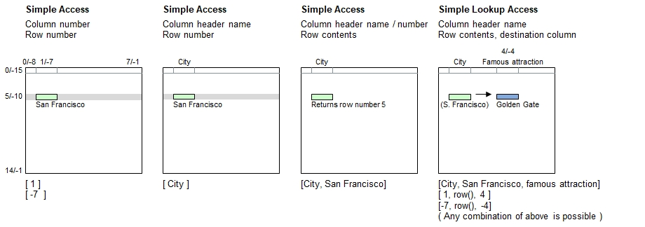

Introduction
Partial table specifications provide a method to access table contents in a simpler way, for example by only mentioning the table column. This is only possible if a current table context is provided.
Table Context
The table context provides and makes use of following default information for partial table specifications:
- The current table name
- The current table row
- Optionally, (but not in all cases) the current table column
Various B4P functions provide the table context for the code which does either follow these functions inside a statement or block,
or apply to the code provided as function parameters to these functions.
Examples of some functions which provide table contexts with table names and rows:
- with table() with 2 function parameters (table name and row)
- for all table rows()
- table process() and table process selected rows()
- All standard table functions which contain the ending ... selected rows. In this case, partial table specifciation is allowed in the expression calculated for every row
Examples of some functions which do also provide the table colums:
- with table() with 3 function parameters (table name and row and column)
- table process cells() and likes
- table process columns() and table process selected columns()
With such a context available, the row number can also be retrieved directly with the function row().
Syntax for Partial Table Specification
The table must be referenced inside brackets using a combination of strings and/or numerals. These may be constant strings and numbers
or expressions providing strings and numerals.
Example 1: Current table name, current row number, specified column
| [ | Column Specifier | ] |
|---|---|---|
| - Header name(s) | ||
| - Column number(s) | ||
| - : Wildcards | ||
| - Ranges |
Example 2: Other table name, current row number, specified column
| [ | Table Name | : | Column Specifier | ] |
|---|---|---|---|---|
| Must be a string | - Header name(s) | |||
| - Column number(s) | ||||
| - : Wildcards | ||||
| - Ranges |
Example 3: Current table name, specified row number, specified column
| [ | Column Specifier | , | Row Specifier | ] |
|---|---|---|---|---|
| - Header name(s) | - Matching contents (string), or | |||
| - Column number(s) | - Row numbers | |||
| - : Wildcards | : Wildcards | |||
| - Ranges | - Ranges |
Syntax for lookup access (Choose column, followed by the row, and pick up data from a different column):
| [ | Column Specifier | , | Row Specifier | , | Column Specifier 2 | ] |
|---|---|---|---|---|---|---|
| - Header name(s) | - Matching contents (string), or | - Header name(s) | ||||
| - Column number(s) | - Row numbers | - Column number(s) | ||||
| - : Wildcards | : Wildcards | - : Wildcards | ||||
| - Ranges | - Ranges | - Ranges |
Principle

Programming Examples
table load( table, "Examples\Cities.csv");
with table( table, 5 ) // Row 5
{
echo( [ 1 ] );
echo( [ -7 ], new line );
echo( [ City ], new line );
echo( [ City, San Francisco], new line ); // Exception to rule: Returns row number
echo( [ City, San Francisco, Famous attraction] );
echo( [ 1, row(), 4] );
echo( [ -7, row(), -4] );
echo("Horizontal access:");
[table row width( table, row() )] = Street roller;
echo( [0.."State/Province"] );
echo( [..] ); // Entire row (till column with last header on top row)
echo( [] ) ; // Entire row (all elements, inclding the Street roler)
echo( [,6] ) ; // Read data in next row
echo( [,row()-1] ) ; // Read data in previous row
echo( [,0] ); // All header names
echo("Vertical access:");
echo( trim( [0,] ) ); // Column 0, including header ( trim: Countries listed only once )
} Output - Staying in San Francisco
San Francisco
San Francisco
San Francisco
5
Golden Gate
Golden Gate
Golden Gate
Horizontal access:
{'USA','San Francisco','California'}
{'USA','San Francisco','California',805000,'Golden Gate',16,'SFMOMA','Cable car'}
{'USA','San Francisco','California',805000,'Golden Gate',16,'SFMOMA','Cable car','Street roller'}
{'CAN','Montréal','Quebec',1700000,'Hôtel du Parlement','','Rialto Theater','Skidoo'}
{'USA','Boston','Massachusetts',620000,'Freedom trail',43,'','Walking'}
{'Country','City','State/Province','Inhabitants','Famous attraction','Alt. (m)','Famous cultural place','Moving along'}
Vertical access:
{'Country','USA','CAN','DAN','ITA','AUT','THA','SWI','FRA'}
Specifying Current Columns
If the context information is also providing the current column number, then the lone point (.) acts as a shortcut
to reference the current column. Please note that the lone point is interpreted as a string string consisting of 1
character (unless it is part of a numeral acting as a decimal point) and not a programming language specific symbol.
This does even apply if the point is a softquoted or quoted string ( '.' or "." ).
Alternatively, you can use the function col() to get the current column number.
If you use the point in single quotation marks, then shifted table column specifications are also supported here.
For example '<.' refers to the next column to the left of the current column.
Programming Examples
table load( table, "Examples\Cities.csv");
[ table: Inhabitants , 0] = '>.'; // Change header to ">." for the test below
[ table: Famous attraction, 0] = '.'; // Change header to '.' for the test below
table list( table );
with table( table, 5, City ) // Row 5
{
echo( "City: ", [.] ); // Single quotation marks not needed for lone point
echo( "City: ", ['.'], " and State: ", ['>.'] ); // Next column after current one is referenced
echo( "Attraction: ", ["."], " and inhabitants: ", [">."] ); // Note: Header ">." is referenced instead
}
// Do the same without column context. Lookig fore header called '.':
echo(new line, "And Philadelphia:");
with table( table, 3 ) // Row 3
{
echo( "Attraction: ", ["."], " and inhabitants: ", [">."] );
}Output:
0 : Country | City | State/Province | >. | . | Alt. (m) | Famous cultural place | Moving along
1 : USA | New York City | New York | 8300000 | St. of Liberty | 10 | Guggenheim | Taxi
2 : USA | Washington | D.C. | 650000 | Lincoln Statue | 7 | Smithsonian Inst. | The Beast
3 : USA | Philadelphia | Pennsylvania | 1500000 | Independence hall | 12 | | PCC streetcar
4 : USA | Boston | Massachusetts | 620000 | Freedom trail | 43 | | Walking
5 : USA | San Francisco | California | 805000 | Golden Gate | 16 | SFMOMA | Cable car
6 : CAN | Montréal | Quebec | 1700000 | Hôtel du Parlement | | Rialto Theater | Skidoo
7 : DAN | Copenhagen | Hovedstaten | 580000 | Little Mermaid | 24 | Royal Theater | Bicycle
8 : ITA | Venice | Venetia | 260000 | Doge's Palace | 1 | Theatro la Fenice | Gondola
9 : USA | Los Angeles | California | 3800000 | Hollywood | 100 | Getty Center | Car
10 : AUT | Vienna | | 1800000 | Prater | | Opera | Fiacre
11 : THA | Bangkok | | 8250000 | Wat Phra Kaeo | 5 | National Museum | Longtail boat
12 : SWI | Zürich | Kt. Zürich | 404000 | Street Parade | 408 | Kunsthaus | Tram
13 : FRA | Paris | Île de France | 2240000 | Eiffel Tower | | Louvre | Métro
14 : SWI | Davos | Grisons | 11000 | Weissfluhgipfel | 1650 | Kirchner Museum | Ski lift
City: San Francisco
City: San Francisco and State: California
Attraction: Golden Gate and inhabitants: 805000
And Philadelphia:
Attraction: Independence hall and inhabitants: 1500000
See also
Nested partial table specifications
shifted table column specifications